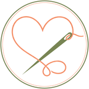
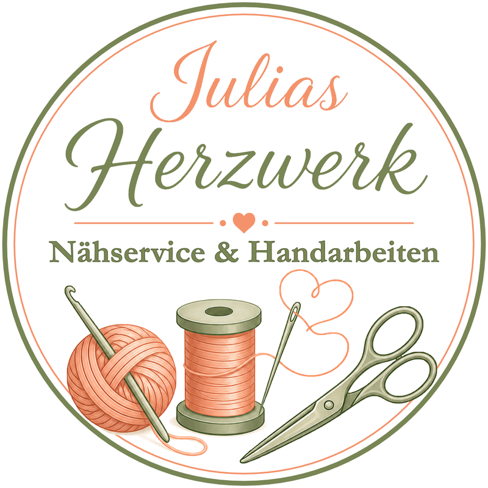

Nähservice für Kleidung, Heimtextilien und Einzelanfertigungen
Vielseitig Einfallsreich Mit Herz
Vielseitig Einfallsreich Mit Herz


ÄNDERUNGSSCHNEIDEREI mit flexiblen Lösungen und individuellem Service in der Region Trofaiach und Umgebung.
MEIN ANGEBOT:
STANDARDARBEITEN wie Änderungen und Reparaturen von Kleidung und Heimtextilien.
SPEZIALARBEITEN wie Reparaturen von Handtaschen, Taschen, Rucksäcken und Stofftieren sowie individuelle Näharbeiten wie Upcycling (Herzensstücke) und Sonderanfertigungen (Handy-Etui, Fensterabdichtungen für Klimageräte, Vorhänge, Zierkissenbezüge, Handtaschen für Männer).

Kleidung ist so viel mehr als nur Stoff – sie begleitet uns im Alltag, schenkt uns Wohlbefinden und bewahrt Erinnerungen. Doch nicht
jedes Stück passt von der Stange oder es wird zu schnell kaputt. Manchmal braucht es eine kleine Änderung, eine Reparatur oder
eine individuelle Anpassung.
Vielleicht möchtest du auch einem ausgedienten Lieblingsstück einen neuen Nutzen geben oder suchst ein persönliches,
emotionales Geschenk? Bei Julias Herzwerk entstehen aus deinen besonderen Stücken neue, schöne und nützliche Dinge: Aus
einem Brautschleier kann zum Beispiel eine Vasenhülle werden, aus Babybodys eine Kissenhülle oder aus einem Hemd ein
Körbchen.
Mit Fingerspitzengefühl, Geduld und Liebe zum Handwerk hauche ich deinen Lieblingsstücken neues Leben ein, kümmere mich
darum, dass Kleidung, Taschen, Rucksäcke oder Stofftiere wieder in Ordnung kommen und mache individuelle Anfertigungen z. B.
Vorhänge, Sitzkissenbezüge oder Handy-Etuis.
Ob Änderung, Reparatur, Upcycling oder individuelles Herzensstück – bei mir ist dein Stoff in guten Händen.
Ruf mich an oder schreib mir eine Nachricht, um einen Termin zu vereinbaren. Ich freue mich, wenn ich dir mit meinem Nähservice
und meinen Handarbeiten weiter helfen kann!